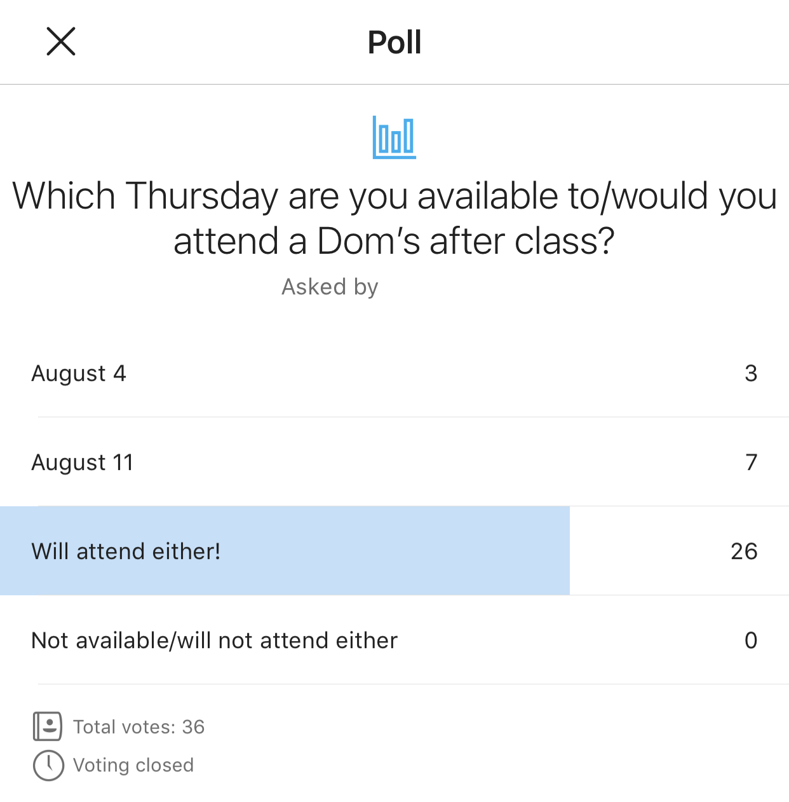
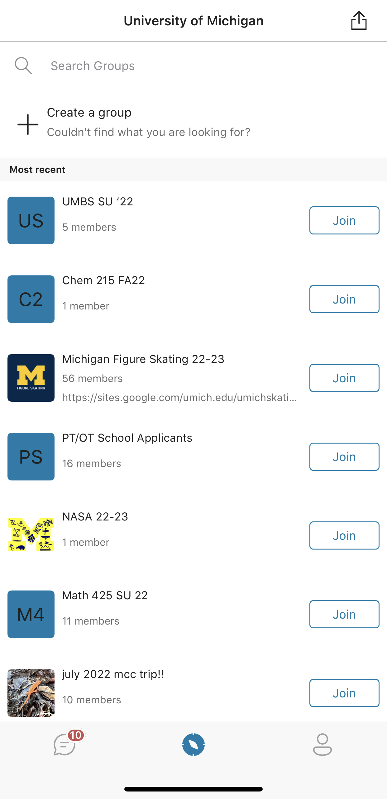

Chapter 7 Tools for Messaging and Virtual Meeting
7.1 Strengths and Weaknesses
| Platform | Strengths | Weaknesses |
|---|---|---|
| Zoom | -Diverse platform that is constantly being upgraded -Effectively mimics face-to-face meetings |
-Functionality limited by internet connection -Zoomboming/Poor security -Low quality camera |
| GroupMe | -Ability to access messages sent before having joined the message group -Ability to message people individually or create public/private groups -Can join all pages associated with your university/organization |
-Inability to create sub threads -Unable to connect to external platforms |
| Slack | -Ability to create and switch between workspaces -Can join all sub threads in a workspace -Can be connected to Google suite |
-Can get disorganized with influx of messages -App is quick to update leaving users to adjust quickly -Additive with direct messages and mentioning team members |
| When2meet | -Easy to use | -Usefulness decreases as number of participants increases -Can be accessed by anyone with the link |
7.2 Zoom
7.2.1 Introduction
Zoom is a virtual communication platform that allows you to connect with others through video or audio conferencing.
7.2.2 Main Features
Chat: Allows participants to privately message one another or send a message to all participants of the meeting. Participants: See all participant names, audio status, and video status. Host can turn off video and audio of the participants. Share Screen: Allows people to share different screen views. Must be enabled by the host. Live Transcript: Provides auto-generated captions throughout the meeting. Must be enabled by the host. Record: The hosts of zoom meetings have the ability to enable recording of the session. The session will notify all participants that recording is on. The recording captures all screens shown throughout the meeting, audio, and live transcript. Zoom is a cloud based platform, therefore, recording can be saved to a cloud or to your computer. Breakout Rooms: The host of the meeting can divide participants into separate sessions. You can run up to 50 sessions within a single zoom meeting. Breakout rooms allow participants to work in smaller groups while allowing the host to move between rooms. Polls: Gathers the responses from meeting participants through single choice or multiple choice polling questions launched by the host. The host can download the results of the polls to use after meetings.
7.2.3 Tutorial
Although you can access Zoom from your browser, downloading the desktop version allows you to access a wider variety of features.
Step 1: Download Zoom
To download Zoom to your desktop, navigate to the Zoom download center here! Under “Zoom Desktop Client”, click “Download” and complete the installation process for your device.
Step 2: Sign In
Once installation is complete, double click on the Zoom icon to open Zoom. Click “Sign In” to sign in to your University of Michigan Zoom account.
Select the “SSO” option under “or sign in with”, enter your UMich email address in the format of uniqname@umich.edu, and click “Continue”.
You will be brought to a browser to complete duo-verification to access your UMich account. Enter your uniqname and password as you normally would.
Once sign in has successfully been completed, you will either be automatically returned to your zoom home screen or you will proceed to a webpage where you will click “Launch Zoom”.
7.3 GroupMe
7.3.1 Introduction
GroupMe is a group messaging app that can be accessed through an app or through your browser. It was created in 2010, it is currently owned by Microsoft and it is currently free to use.
7.3.2 Main Features
- Chat: Allows users to start/participate in both individual and group messaging. In the chat window, users can search messages for specific words, mute messages, hide messages, or mark messages as read.
- Polls: Gathers the responses from group chat members through single choice or multiple choice polling questions launched by the host. The results are made available to everyone, and individual responses can be made anonymous.

- Profile: Allows users to access a QR for their account so other users can add them as a contact. From here, users can access contacts, archives, settings, and help/feedback tabs.
- Discover: Allows users to find groups nearby and affiliated with their organization. The University of Michigan has over one hundred groups listed in its organization, and students are free to join any group set to public.

7.3.3 More Resources
Visit the GroupMe website to get sign-up and download the appropriate app for your device.
7.4 Slack
7.4.1 Introduction
Slack is a communication platform made to increase the efficiency and efficacy of team communication.
7.4.2 Main Features
- Channels: A place where a number of people join to converse about a certain topic, which houses their conversations, files exchanged, and more. Organizations can either set channels as visible to others or by invitation only.
- Direct Messages: Allows users to message everyone in the slack workspace to privately message one another and essentially create a mini channel. Direct messages can do everything a channel can.
- Slack Connect: Allows users of one organization to connect with Slack users of another organization while maintaining the same workflow before connection.
- Connect to Other Apps: Slack can be connected to Google Drive, Google Calendar, Notion, Microsoft Word, and more. Slack can connect to over 2,200 apps and integrations.
7.5 When2Meet
7.5.1 Introduction
When2Meet is a scheduling tool that helps groups find the best time to meet. Users input their availability and When2Meet returns a green/red color scale calendar showing times when people are most available/unavailable.
7.5.2 Main Features
- What dates might work?: Allows the planner of the event to select specific dates or days of the week for group members to enter their availability.
- What times might work?: Allows the planner to select the time zone and time period they would like group members to enter their availability for.
- Sign In: Users can enter a display name to be shown on the calendar. They may also enter a password to revise their availability as needed and the password maintains the security of their responses.
- Calendar: Displays the group’s availability in 15 minute increments when hovered over, along with who is either available or unavailable.
7.5.3 Tutorial
Step 1: Plan a New Event
As the organizer of the event, navigate to the When2Meet website. Select the “Plan a New Event” tab in the top left corner. Name your meeting/event in the “New Event Name” text box.
Step 2: Select Dates
Click on the dropdown menu next to “Survey using:” and select either “Specific Dates” or “Days of the Week”.
If you select “Days of the Week”, select the specific day of the week you wish group members to enter their availability for. The selected dates/days will turn green.
If you select “Specific Dates”, select all of the days you wish group members to enter their availability for. To change months, drag the column where the months are listed to the left of the calendar up or down. The selected dates/days will turn green.
Step 3: Select Times
Select the start and end time of the period you want group members to enter their availability for using the dropdown menus next to “No earlier/later than”. You may also change the time zone. When finished, click the “Create Event” button in the bottom right corner.
Step 4: Send the Link
Under the event name, you can email, Facebook message or copy the link to share the When2Meet with others. Everyone who receives the link will be prompted to enter a name and the option to enter a password. Click “Sign In” when finished.
Step 5: Enter Your Availability
The left hand side shows your availability and the right hand side shows the group’s availability. On the left, enter your availability by clicking and dragging to toggle between green (available) and red (unavailable) in 15 minute increments.
Step 6: Check Group’s Availability
As group members enter their availability, the group availability calendar on the left will update. Hover over different times in the calendar to see who is available. As you hover over a time increment on the right, the name of each group member who is available/unavailable will be shown on the left.
7.5.4 More Resources
To contact support, ask questions, and watch a demo video about When2Meet, click here!